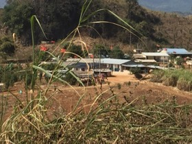

About

I work as a Hallsworth Research Fellow in Political Economy at the University of Manchester and as a Research Associate in the Department of Development Studies at SOAS University of London. Currently, I lead a three-year project, Borderland Capitalism: the Chinese-run online scam industry in Southeast Asia.
Trained in political science, I adopt a historically grounded approach that integrates archival research with fieldwork-based oral histories to examine the persistence of conflict and illicit economies in Southeast Asia’s contested borderlands, with a particular focus on Myanmar.
My research has been published in leading peer-reviewed journals, including Journal of Contemporary Asia, China Perspectives, and Asian Studies Review. I am currently developing two book projects: one on borderland statecraft and armed politics, and another on the politics of the digital illicit economy.
I also contribute expert analysis to major international media outlets, including the BBC, The Washington Post, and the South China Morning Post, where I provide evidence-based commentary on Myanmar’s conflict dynamics and China’s engagement in Southeast Asia.